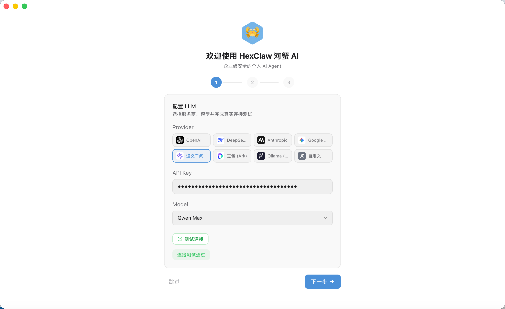
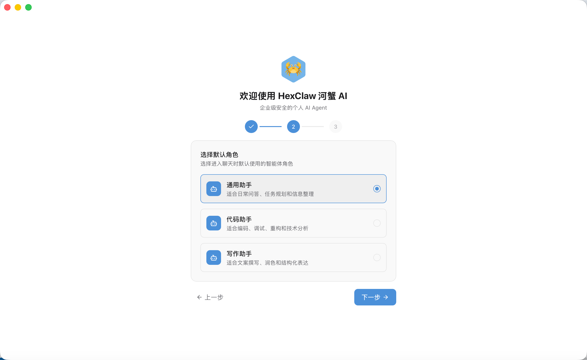
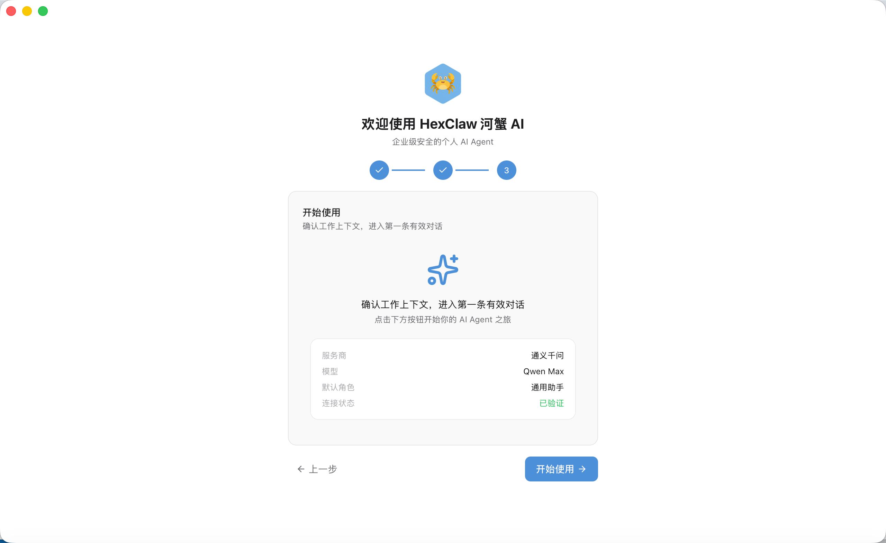
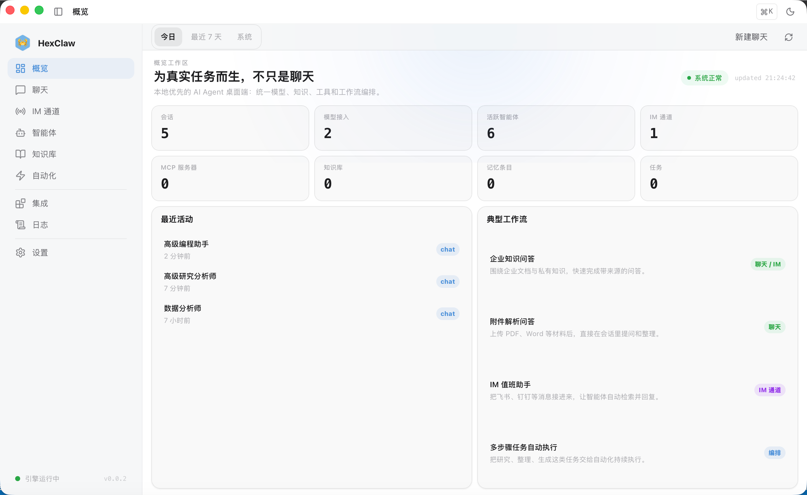

ھېشى AI ھۆججەتلەر
تېز قول سېلىش
5 مىنۇتتا تامامىلاشئورنىتىش، تەڭشەش، بىرىنچى ئۇچۇر يوللاشئۇچۇر.
سىستېما要求
| 平台 | 最低要求 |
|---|---|
| macOS | 12 Monterey 及以上، Apple Silicon / Intel |
| Windows | Windows 10 (1809+)، x64 |
| Linux | Ubuntu 20.04+ / Fedora 36+، x64 |
ئورنىتىش
方式一: 一行脚本ئورنىتىش (macOS 推荐)
curl -fsSL https://raw.githubusercontent.com/hexagon-codes/hexclaw-desktop/main/install.sh | bash方式二: Homebrew ئورنىتىش (macOS)
brew tap hexagon-codes/tap && brew install --cask hexclaw方式三: چۈشۈرۈشئورنىتىش包
前往 GitHub Releases چۈشۈرۈش对应平台ئورنىتىش包 (当前نەشرى v0.2.4) :
- macOS:
.dmg— 拖入 Applications 即بولىدۇ - Windows:
.exe— 双击ئورنىتىش - Linux:
.AppImageياكى.deb
方式四: 源码编译
git clone https://github.com/hexagon-codes/hexclaw-desktop.git
cd hexclaw-desktop
pnpm install
pnpm tauri devئەسكەرتىش: 源码编译ئېھتىياج Node.js 20.19+، pnpm، Rust stable (2021 edition) ۋە Go 1.23+ (用于 Sidecar موتور) .
首次قوزغىتىش向导
首次ئېچىشھېشى AI 时، بولىدۇ自动كىرىش 3 步تەڭشەك向导:
- تەڭشەش AI مۇلازىمەت تەمىنلىگۈچى — تاللاش Provider، تولدۇرۇش API Key، 并完成مودېلئۇلىنىشسىناش
- تاللاشكۆڭۈلدىكىرول — تاللاشكىرىشئەپ后كۆڭۈلدىكىئىشلىتىش的ئەقىللىق ئاجانترول
- جەزملەش工作مۇھىت — 核对مۇلازىمەت تەمىنلىگۈچى، مودېل، كۆڭۈلدىكىرول后ئىشلىتىشنى باشلاش
完成向导后自动كىرىشسۆھبەت页. 后续بولىدۇ在 تەڭشەك → مودېل مۇلازىمەت تەمىنلىگۈچى 中修改تەڭشەش.
ئەسكەرتىش: 如果跳过了向导، 下次ئېچىشئەپ仍بولىدۇئەسكەرتىشتەڭشەش (直到至少قوشۇش一个 Provider) .



首次تەڭشەش
1. تەڭشەش AI مۇلازىمەت تەمىنلىگۈچى
ئېچىشئەپ后كىرىش تەڭشەك → مودېل مۇلازىمەت تەمىنلىگۈچى، قوشۇش至少一个 AI مۇلازىمەت تەمىنلىگۈچى:
- OpenAI — تولدۇرۇش API Key (
sk-...) ، بولىدۇئۇلىنىش GPT-4o، o يۈرۈشلۈكقاتارلىقمودېل - DeepSeek — تولدۇرۇش API Key، بولىدۇئۇلىنىش DeepSeek يۈرۈشلۈكمودېل
- Anthropic — بولىدۇئۇلىنىش Claude يۈرۈشلۈكمودېل
- Google Gemini — بولىدۇئۇلىنىش Gemini يۈرۈشلۈكمودېل، 部分مودېلقوللاشسىن/ئاۋاز能力
- 阿里 Qwen — بولىدۇئۇلىنىش通义千问يۈرۈشلۈك، 含视觉مودېل
- 字节 Ark (Doubao) — بولىدۇئۇلىنىشDoubao及火山方舟ماسلاشقانمودېل، 含视觉مودېل
- Ollama (本地) — ئېھتىياج يوق API Key، قوللاش Llama / Qwen / Mistral / DeepSeek قاتارلىقيەرلىك مودېل
- ئىختىيارىي — 任何ماسلاشقان OpenAI API 格式的服务
تەڭشەشھۆججەتمىسال
ھېشى AI يەنەقوللاشئارقىلىق YAML تەڭشەشھۆججەت进行初始化تەڭشەك:
# ~/.hexclaw/hexclaw.yaml
server:
host: 127.0.0.1
port: 16060
llm:
default: openai
providers:
openai:
api_key: sk-your-key-here
base_url: https://api.openai.com/v1
model: gpt-4o
platforms:
feishu:
enabled: false
app_id: ""
app_secret: ""2. تاللاشكۆڭۈلدىكىمودېل
在مۇلازىمەت تەمىنلىگۈچىتەڭشەش中، 勾选一个مودېل作ئۈچۈنكۆڭۈلدىكىسۆھبەتمودېل.
3. بىرىنچى ئۇچۇر يوللاشئۇچۇر
كىرىش سۆھبەت بەت، 在كىرگۈزۈش رامكىسى输入任意内容، 按回车发送. قوللاشئېقىپ چىقىرىش، 实时显示 AI 回复.
首次排障入口
如果ئورنىتىش完成后仍无法نورمالسۆھبەت، تەكلىپ先تەكشۈرۈش下面三项:
- ئېچىش تەڭشەك → مودېل مۇلازىمەت تەمىنلىگۈچى، 对当前 Provider ئىجرا قىلىش一次سىناشئۇلىنىش
- ئېچىش خاتىرە بەت، جەزملەش Engine 已قوزغىتىش且كۆڭۈلدىكى端口
16060未被占用 - 如果仍有空白页، 401/403، MCP ئۇلىنىش失败قاتارلىقسوئال، 直接كۆرۈش كۆپ كۆرۈلىدىغان سوئاللار
ئەپ架构
ھېشى AI ئۈستەلئۈستى ئۇچىئىشلىتىش Tauri v2 + Vue 3 + Go Sidecar 架构:
- ئالدى ئۇچ: Vue 3 + TypeScript + Pinia + TailwindCSS
- ئۈستەلئۈستى壳: Tauri v2 (Rust) ، 负责窗口باشقۇرۇش، سىستېما托盘، ئومۇمىي تېز كۇنۇپكا
- AI موتور: Go Sidecar (hexclaw) ، 负责مودېلچاقىرىش، ئىش ئېقىمىئىجرا قىلىش، بىلىم ئامبىرى، ئەستە تۇتۇشقاتارلىق核心逻辑
- سانلىق-مەلۇمات库: SQLite، 本地ساقلاشكۆرۈشۈشۋەئۇچۇر
سانلىق-مەلۇماتشەخسىيەت: بارلىقسانلىق-مەلۇماتساقلانغان本地، 不经过任何第三方مۇلازىمېتىر (除你تەڭشەش的 AI API 外) .
كۆرۈنمە يۈزئومۇمىي
ھېشى AI 提供 14 个ئىقتىداربەت:
| بەت | ئىقتىدار |
|---|---|
| 仪表盘 | 全局统计: كۆرۈشۈش数، ئۇچۇر数، ئاجانت 数، بىلىم ئامبىرى، موتور状态 |
| سۆھبەت | 多مودېلسۆھبەت، ئېقىپ چىقىرىش، Artifact ئالدىن كۆرۈش، ئۇچۇرچىقىرىش |
| ئاجانت | قۇرۇش/باشقۇرۇش AI رول، 多 ئاجانت بولىدۇ议ھالەت |
| ئىش ئېقىمى تاختىسى | بولىدۇ视化拖拽تەرتىپلەش، DAG ئىجرا موتورى |
| ۋاقىتلىق ۋەزىپە | Cron 定时调度 ئاجانت 自动ئىجرا قىلىش |
| ماھارەت بازىرى | ئورنىتىش/باشقۇرۇشماھارەتقوشۇمچە |
| بىلىم ئامبىرى | ھۆججەتلەر上传، RAG 向量检索 |
| ئەستە تۇتۇش | 跨كۆرۈشۈشمەنائەستە تۇتۇشباشقۇرۇش |
| MCP | Model Context Protocol مۇلازىمېتىر注册ۋەقورال发现 |
| خاتىرە | 实时 WebSocket خاتىرە流 |
| 团队 | 共享 ئاجانت، 成员协作 |
| تەڭشەك | مۇلازىمەت تەمىنلىگۈچىتەڭشەش، بىخەتەرلىك策略، 外观主题، 通知 |
